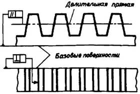

Расчет реек
Содержание:
Зубчатая реечная передача состоит из колеса и рейки с исходным контуром по ГОСТ 13755—81 с прямыми или косыми зубьями.
Формулы для расчета реек
|
Параметры и обозначения |
Расчетные формулы |
|
Угол профиля зуба рейки а Угол наклона зуба β |
а = 20º β рекомендуется принимать не более 20° |
|
Модуль нормальный mn |
mn принимается конструктивно и определяется расчетом |
|
Модуль основной(торцовый) mt |
mt = mn / cosβ |
|
Шаг нормальный рn |
pn = πmn |
|
Шаг торцовый рt |
pt = pn/cosβ |
|
Высота головки зуба ha |
ha = mn |
|
Высота зуба h (размер справочный) |
h = 2,25mn |
|
Ширина рейки b |
b = (2…10)mn |
|
Длина косого зуба b1 |
b1 = b / cosβ |
|
Линейное перемещение рейки L, соответствующее углу поворота колеса или червяка |
L = γptz/ 360° (z - число зубьев колеса или число заходов червяка) |
|
Угол поворота колеса γ, соответствующий перемещению рейки на величину L |
γ = L 360/(ptz) |

Рис. 1. Базовые поверхности рейки
Базовыми поверхностями рейки называют поверхности, относительно которых задается положение делительной прямой и направление зуба рейки (рис. 1).